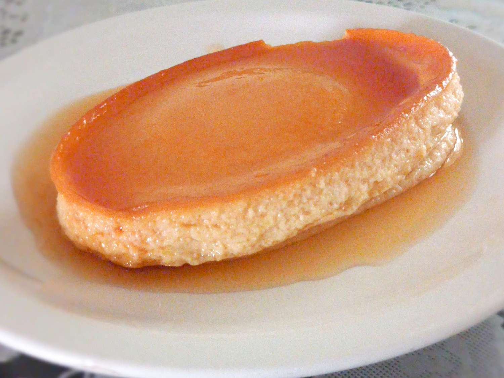

Leche Flan

My mom would always make this Filipino-style flan for dessert in Christmas and I always loved it.
Prep Time
10 minutes
Cook time
1hr 10mins
Ingredients
- Caramel
- 1 cup sugar
- ½ cup water
Custard
- 1 (13 ounce) can evaporated milk
- 1 (13 ounce) can sweetened condensed milk
- 12 egg yolks
- 1 tablespoon vanilla extract
Directions
- Preheat the oven to 325 degrees F (165 degrees C).
- Combine sugar and water in a saucepan over medium-high heat. Bring to a boil without stirring to avoid the mixture crystallizing. Continue to boil, swirling the pan occasionally, until sugar syrup begins to brown, 7 to 10 minutes. Reduce the heat to medium low and watch the color. Once the caramel is a deep brown, immediately pour it into a flan mold.
Carefully tilt the mold to make sure the whole bottom surface is covered.
- Combine evaporated milk, condensed milk, egg yolks, and vanilla extract in a large bowl. Stir lightly to prevent bubbles or foam from forming.
Strain batter slowly into the caramel-lined flan mold. Cover with aluminum foil.
- Place a baking dish large enough to hold the flan mold on the oven rack.
Set the covered flan in the baking dish and add enough hot water to come halfway up the side of the mold.
- Bake in the preheated oven until firm, about 1 hour. Carefully remove the flan mold from the oven. Let cool, about 30 minutes.
Run a paring knife around the edges of the flan. Cover the mold with a rimmed platter and carefully flip it over to release
the flan from the mold for serving.
Tip: The more caramel you pour into the mold, the sweeter the leche flan.